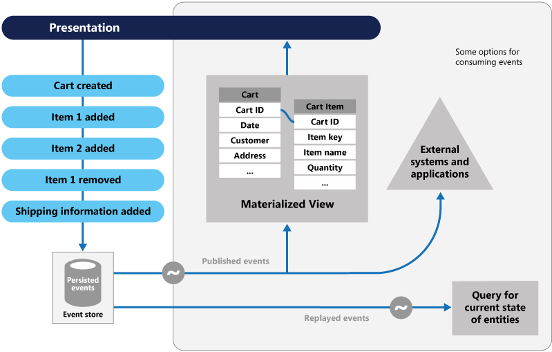

Microservices design patterns
- Database per service pattern
- API gateway pattern
- Asynchronous messaging
- Event sourcing
- Saga pattern (Choreography / Orchestration)
- Command query responsibility segregation (CQRS)
- Circuit breaker design pattern(Open/Closed/Half-open)
- Aggregator design pattern
- Strangler
- Decomposition patterns
Decomposition by business capability
Decomposition by subdomain
Decomposition by transaction
Database per service pattern
A database dedicated to one service can’t be accessed by other services. This is one of the reasons that makes it much easier to scale and understand from a whole end-to-end business aspect.
BenefitsHelps ensure that the services are loosely coupled. Changes to one service’s database does not impact any other services
Each service can use the type of database that is best suited to its needs.
DrawbacksImplementing business transactions that span multiple services is not straightforward. Distributed transactions are best avoided because of the CAP theorem
Implementing queries that join data that is now in multiple databases is challenging
API gateway pattern
In a microservices architecture, each microservice exposes a set of (typically) fine-grained endpoints. This fact can impact the client-to-microservice communication

The primary way the pattern improves security is by reducing the attack surface area.
The API endpoints aren’t directly exposed to clients and authorization and SSL can be efficiently implemented.
DrawbacksAn API Gateway requires additional development cost and future maintenance if it includes custom logic and data aggregation.
Asynchronous messaging-Based Communication
If a service does not need to wait for a response and can continue running its code post-failure, asynchronous messaging can be used. Using this design pattern, microservices can communicate in a way that’s fast and responsive.
So we should understand that isolation is important between microservices, we should isolate services as much as possible. Since microservices are distributed system running on multiple processes, services required to interact with each other with using an inter-process communication protocols like sync HTTP, gRPC or async AMQP protocols.
BenefitsAn asynchronous message listener can delegate a request to a different node.
DrawbacksDebugging asynchronous applications code can be tricky because the execution is not sequential. Bugs can be subtle and hard to reproduce.
Event sourcing
Instead of storing just the current state of the data in a domain, use an append-only store to record the full series of actions taken on that data. The store acts as the system of record and can be used to materialize the domain objects. It can also provide consistency for transactional data, and maintain full audit trails and history that can enable compensating actions.

BenefitsThis can simplify tasks in complex domains
It can also provide consistency for transactional data, and maintain full audit trails and history that can enable compensating actions.
DrawbacksThe CRUD approach has some limitations:CRUD systems perform update operations directly against a data store. These operations can slow down performance and responsiveness and can limit scalability, due to the processing overhead it requires.
In a collaborative domain with many concurrent users, data update conflicts are more likely because the update operations take place on a single item of data.
Saga pattern
A saga is a series of local transactions. In microservices applications, a saga pattern can help maintain data consistency during distributed transactions.
The saga pattern is an alternative solution to other design patterns that allows for multiple transactions by giving rollback opportunities.
A common scenario is an e-commerce application that allows customers to purchase products using credit. Data may be stored in two different databases: One for orders and one for customers. The purchase amount can’t exceed the credit limit. To implement the Saga pattern, developers can choose between two common approaches.
Choreography-based Saga
In a choreography-based saga approach, each microservice would publish a domain event after executing a local transaction that would trigger the next transaction in another microservice.
Orchestration-based Saga
In an orchestration-based saga approach, we have a saga orchestrator that manages all the transactions and directs the participating microservices to execute their local transactions.
The Saga pattern is efficient for handling distributed transactions in applications with multiple services.
The saga pattern, businesses can ensure data consistency and reliable transaction execution, even in the case of failures
DrawbacksWorkflow can become confusing when adding new steps, as it's difficult to track which saga participants listen to which commands.
There's a risk of cyclic dependency between saga participants because they have to consume each other's commands.
Command query responsibility segregation (CQRS)
The way this works is that CQRS is responsible for either changing the state of the entity or returning the result in a transaction. Multiple views can be provided for query purposes, and the read side of the system can be optimized separately from the write side.
This shift allows for a reduction in the complexity of all apps by separately querying models and commands so:
The write side of the model handles persistence events and acts as a data source for the read side
The read side of the model generates a projections of the data, which are highly denormalized views
BenefitsRead activity tends to be more frequent than writing, thus you can reduce response latency by placing read data sources in strategic geolocations for better performance.
DrawbacksEnsuring data consistency requires special consideration in terms of Service Level Agreements (see the CAP theorem).
Using a large number of databases means more points of failure, thus companies need to have comprehensive monitoring and fail-safety mechanisms in place to provide adequate operation
Circuit breaker design pattern(Open/Closed/Half-open)
The circuit breaker pattern can prevent a caller service from retrying a call to another service (callee) when the call has previously caused repeated timeouts or failures. The pattern is also used to detect when the callee service is functional again.
This pattern is inspired by the electrical circuit breaker, which automatically opens the circuit if the current flow exceeds a certain threshold. This prevents the circuit from overheating and causing a fire.
In a microservices architecture, it works the same way, monitors the health of a microservice and automatically blocks requests from that service if it becomes unhealthy.
BenefitsProvides both fast magnetic response to short circuits and slower thermal response to overloads
DrawbacksMore complex and slightly more costly than single-mechanism breakers.
Aggregator design pattern
An aggregator design pattern is used to collect pieces of data from various microservices and returns an aggregate for processing. Although similar to the backend-for-frontend (BFF) design pattern, an aggregator is more generic and not explicitly used for UI.
To complete tasks, the aggregator pattern receives a request and sends out requests to multiple services, based on the tasks it was assigned. Once every service has answered the requests, this design pattern combines the results and initiates a response to the original request.
BenefitsScalability of both the x-axis and z-axis
Tunneling microservices, Microservices signature flexibility to Internal Services
DrawbacksComplexity to orchestrate data
Bottleneck anti-pattern
Latency in communication between microservices
Strangler
Developers mostly use the strangler design pattern to incrementally transform a monolith application to microservices. This is accomplished by replacing old functionality with a new service — and, consequently, this is how the pattern receives its name. Once the new service is ready to be executed, the old service is “strangled” so the new one can take over.
To accomplish this successful transfer from monolith to microservices, a facade interface is used by developers that allows them to expose individual services and functions. The targeted functions are broken free from the monolith so they can be “strangled” and replaced.
To fully understand this specific pattern, it’s helpful to understand how monolith applications differ from microservices.
Decomposition patterns
Decomposition design patterns are used to break a monolithic application into smaller, more manageable microservices. A developer can achieve this in one of three ways:
Decomposition by business capability
Decomposition by subdomain
Decomposition by transaction
It facilitates the division of labor and the sharing of knowledge. Using it, multiple people (or teams) with special knowledge can work productively together on an application.